When the camera only rotates around a fixed center of projection, any two photos are related by a projective transformation (a homography). In this part I recover homographies from hand-clicked correspondences, write inverse warping with nearest-neighbor and bilinear interpolation, use it to rectify planar objects, and finally stitch several photos into a panoramic mosaic with a 2-level Laplacian pyramid blend. All photos were taken with an iPhone and resized so the longer side is 1200 px.
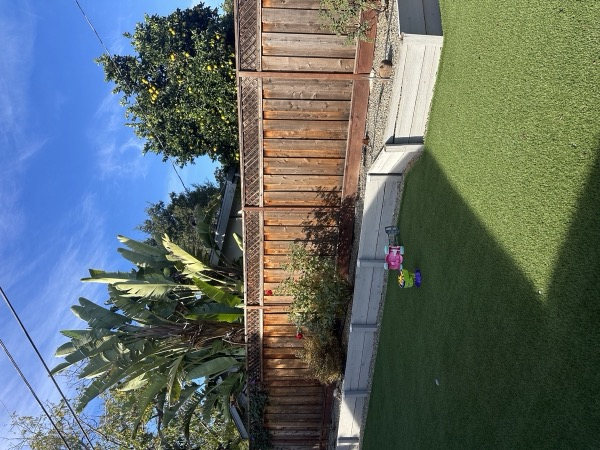
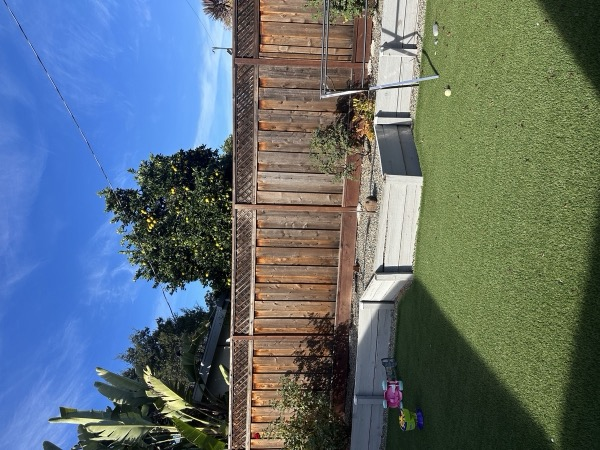
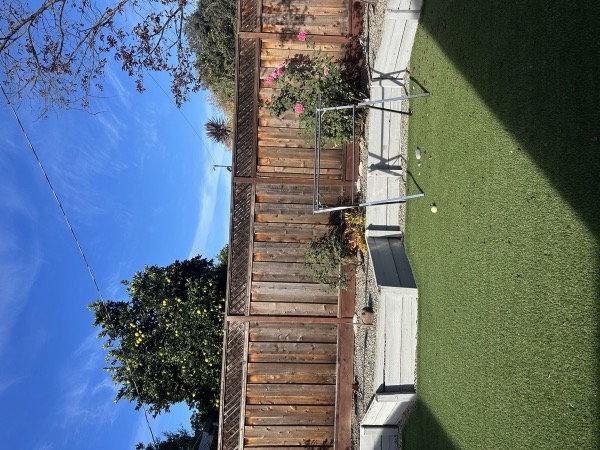
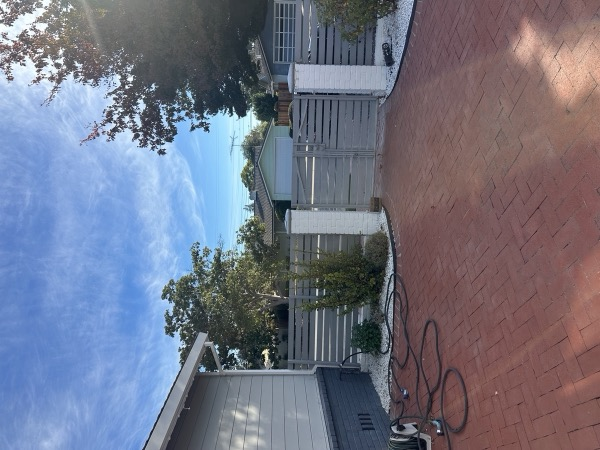
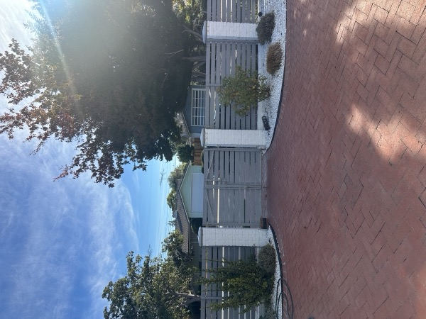
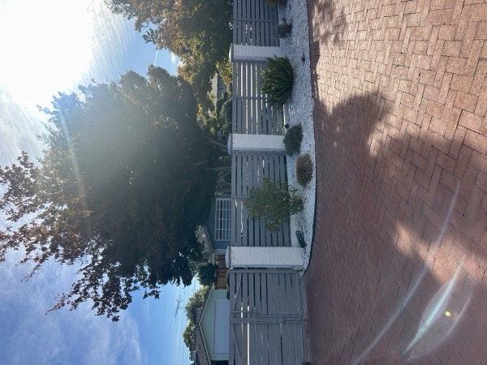
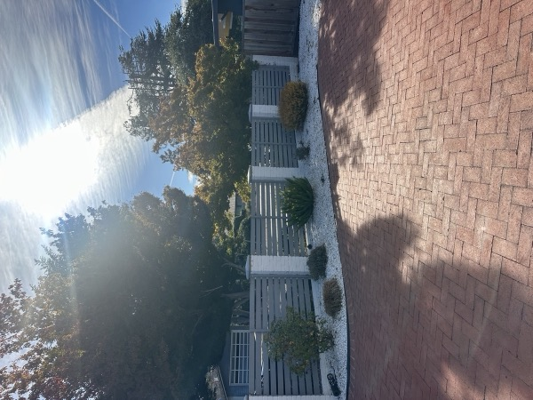
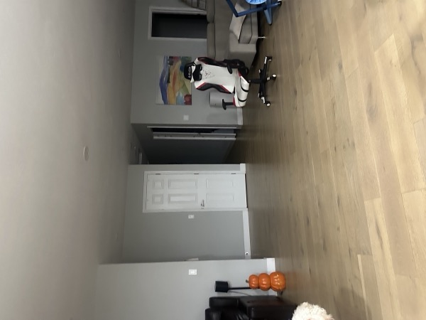
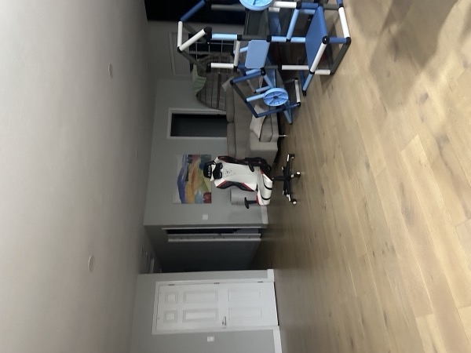
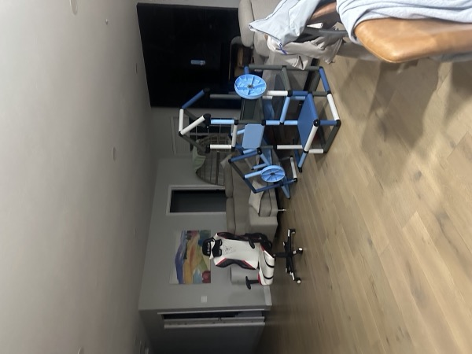
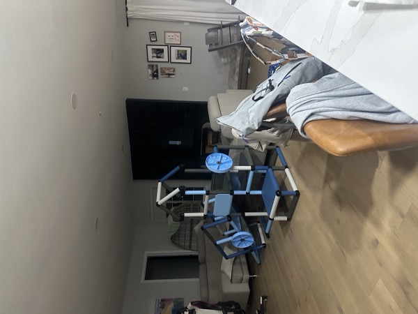
A homography maps a point p = (x, y) in one image to p' = (x', y') in the other. Written in homogeneous coordinates, p' = Hp, and the image coordinates are recovered by dividing by the third component w. Fixing the bottom-right entry to 1 leaves 8 unknowns a–h.
[w·x'] [a b c] [x] [w·y'] = [d e f] [y] x' = (a·x + b·y + c) / (g·x + h·y + 1) [ w ] [g h 1] [1] y' = (d·x + e·y + f) / (g·x + h·y + 1)
Multiplying both sides by the denominator and moving every unknown to the left turns each correspondence into two linear equations:
a·x + b·y + c − g·x·x' − h·y·x' = x' d·x + e·y + f − g·x·y' − h·y·y' = y'
Stacking the two rows for all n correspondences gives the system A h = b, with A of size 2n × 8 and h = [a, b, c, d, e, f, g, h]T. Four pairs give an exact solution. With more pairs the system is overdetermined so computeH solves it with least squares (np.linalg.lstsq) which averages the few-pixel clicking errors.
a b c d e f g h
[ x₁ y₁ 1 0 0 0 −x₁·x₁' −y₁·x₁' ] [ x₁' ]
[ 0 0 0 x₁ y₁ 1 −x₁·y₁' −y₁·y₁' ] [ y₁' ]
A = [ ⋮ ] , b = [ ⋮ ]
[ xₙ yₙ 1 0 0 0 −xₙ·xₙ' −yₙ·xₙ' ] [ xₙ' ]
[ 0 0 0 xₙ yₙ 1 −xₙ·yₙ' −yₙ·yₙ' ] [ yₙ' ]
I clicked 12 correspondences between IMG_7069 and IMG_7070, spread over the overlap: corners of the planter wall, tops of the fence posts, the toys and the neighbor's roof.
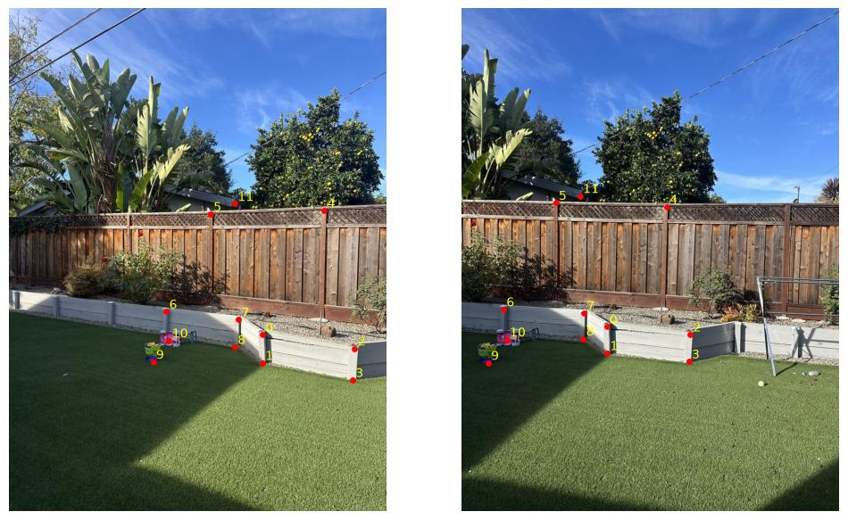
Recovered homography from IMG_7069 to IMG_7070:
[ 1.54271 0.00665 −458.20456 ]
H = [ 0.34083 1.38042 −237.16257 ]
[ 0.00056 0.00005 1.00000 ]
Both warping functions use inverse warping, so the output has no holes. First I decide the output canvas: normally I project the four corners of the input through H and take their bounding box. Every output pixel is then mapped back with H−1, divided by the homogeneous coordinate, and looked up in the source image. Pixels that land outside the source get alpha = 0. The functions return an RGBA image together with the canvas offset (xmin, ymin), which A.4 uses to place images.
canvas ← bounding box of H · (four corners of im)
for every output pixel (x', y') on the canvas:
(x, y) ← H⁻¹ · (x', y', 1), divided by w
if (x, y) is outside im: alpha ← 0
else: color ← sample im at (x, y), alpha ← 1
Nearest neighbor rounds (x, y) to the closest pixel. Bilinear takes the four surrounding pixels and weights them by distance.
To test the warp, I clicked the four corners of a rectangular object (top-left, top-right, bottom-right, bottom-left) and mapped them to an axis-aligned rectangle with a hand-picked aspect ratio. For rectification the canvas is the target rectangle itself. Projecting the image corners does not work here. The wall in the window photo vanishes inside the frame so the right corners of the photo lie past its horizon line and project to meaningless far-away points like sky.
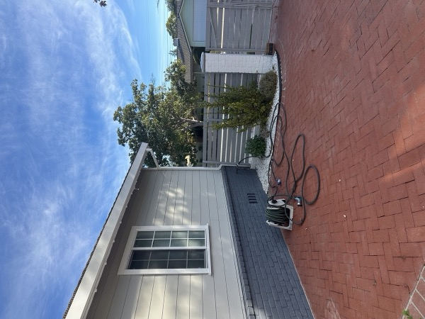
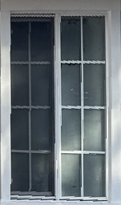
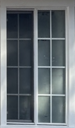
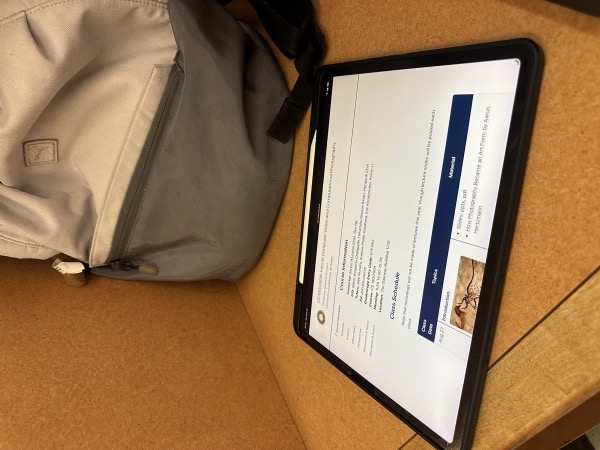
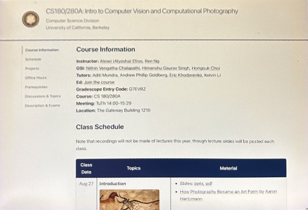
| Image | Output size | Nearest neighbor | Bilinear |
|---|---|---|---|
| Window | 151 × 256 | 0.11 s | 0.31 s |
| iPad | 441 × 301 | 0.35 s | 1.10 s |
Bilinear is about 3× slower since it reads four pixels for each output pixel while nearest neighbor reads one. But nearest neighbor causes aliasing. It rounds each point to the closest pixel so edges become jagged and slightly bent. On the window, the top edge turns into a zigzag and the frame shifts in small steps. On the iPad, the letters lose their shape. Bilinear averages nearby pixels so edges stay smooth and the text is easy to read. The result is a little softer. So I use bilinear for the mosaics.
Registration. I clicked points only between neighboring images and computed one homography per pair. One image near the middle is the reference. It stays unwarped. To map an image to the reference, I chain the pairwise homographies. Images on the right use the inverses, because their pairs point the other way.
H[ref] = I left of ref: H[i] = H[i+1] @ H_pair[i] # i → i+1 → … → ref right of ref: H[i] = H[i−1] @ inv(H_pair[i−1]) # i → i−1 → … → ref
One-shot warping. I project the corners of all images into the reference frame. Their bounding box is the size of the final mosaic. Then I warp every image onto this canvas with bilinear interpolation. This gives a stack of aligned RGBA images.
Blending. I tried three ways to combine the stack. The results on the back yard set are shown below.
distance_transform_edt). The weight is 1 deep inside the image and drops to 0 at its edges. The mosaic is the weighted average Σ wi·imgi / Σ wi. The seams are gone, but the fence looks blurry. The homographies are off by a few pixels. Averaging two shifted copies of fine details creates ghosting.pyrDown. The high band is the image minus pyrUp(low), which keeps only the details. I blend the low band with the feathering weights. This smooths out the exposure. I do not average the high band. Instead, each pixel takes its details from the image with the largest weight. This keeps the details sharp. Finally, I add pyrUp(low) and the high band back together.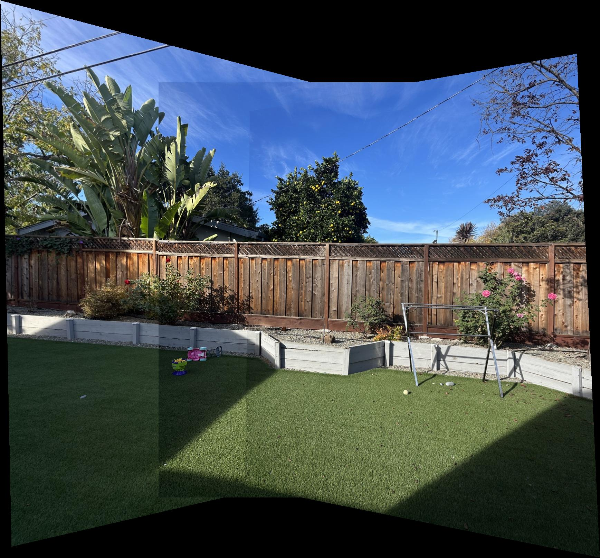
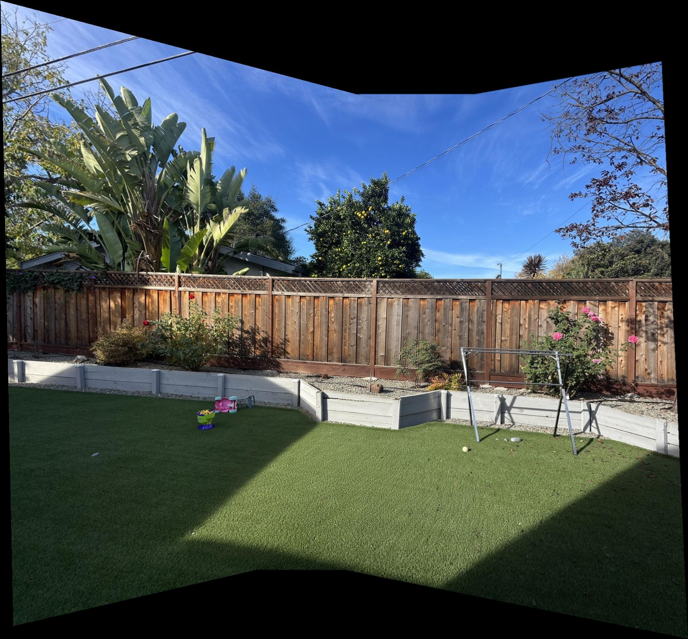
IMG_7069, IMG_7070, IMG_7071, with IMG_7070 as the reference.
IMG_7079 to IMG_7082, with IMG_7080 as the reference. The right side is stretched more, because those images are further from the reference.
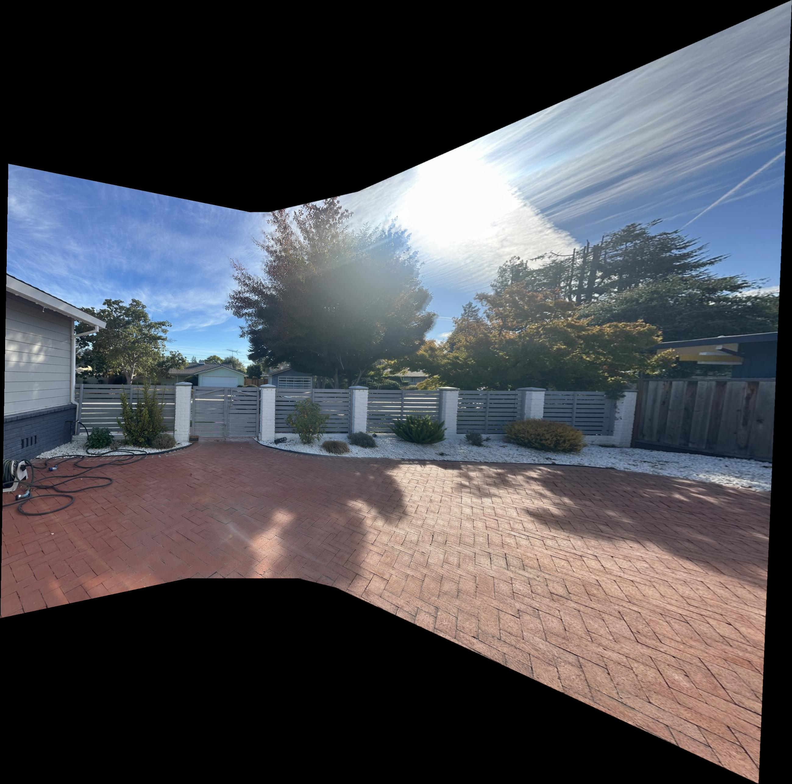
IMG_7059 to IMG_7062, with IMG_7061 as the reference.
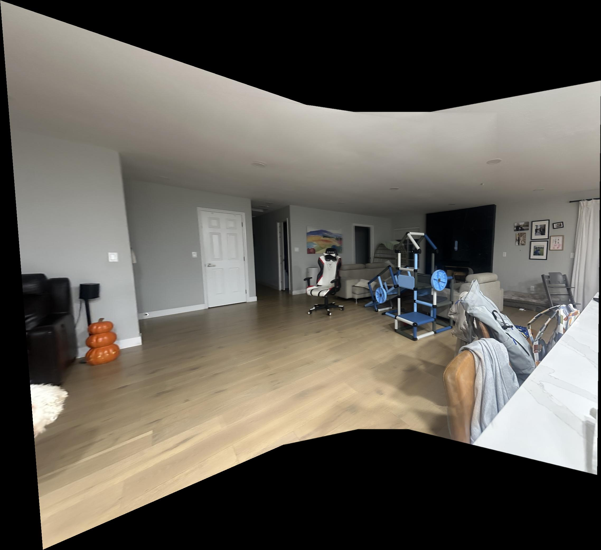